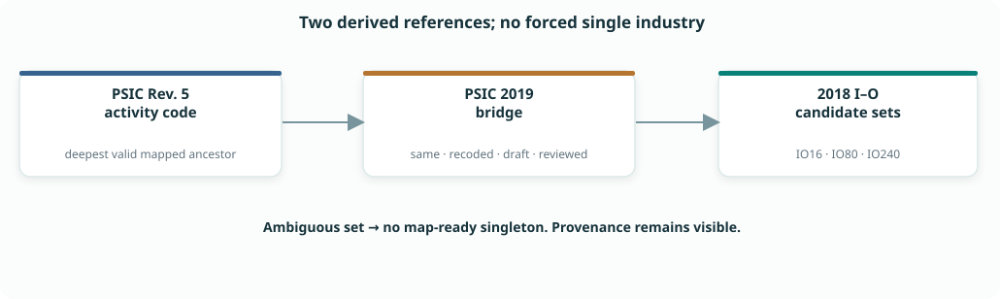

From PSIC activity to PSA I–O industries
A classified activity is not automatically an observed supplier, transaction, or uniquely identified industry. PlaceType PH projects PSIC codes into **candidate sets** for the PSA 2018 input–output industry system, preserving revision and correspondence uncertainty.
Why there are two bridges
The package classifies establishments against PSIC Revision 5, while the PSA 2018 input–output industries use the 2019 update to the 2009 PSIC. Therefore the correspondence is not a simple lookup of identical codes:

- Choose the deepest section, division or group ancestor in Rev. 5 with a usable, title-compatible version-bridge row.
- Follow
psic_rev5_to_psic_2019.csvto the corresponding PSIC 2019 code(s). Relation may besame,recoded,renamed,changed_scope,new, orno_counterpart. - Combine the derived
psic_2019_to_io_2018.csvrows into sets of IO16, IO80 and IO240 candidates. A revision bridgebasisiscode_title_match,draft, orreviewed. - Preserve the candidate codes, names, confidence, map status, bridge basis, relation, and correspondence level in the classified summary.
The concordance is a derived analytical reference, not an official PSA PSIC-to-I–O codebook; the bridge contains both reviewed and draft rows. See DATA_SOURCES.md.
Exact candidate set versus map-ready code
For each resolution, io16_codes, io80_codes and io240_codes hold a potentially multi-valued set. io*_map_code is nonempty only if that candidate set currently has one item. SINGLETON_CANDIDATE describes cardinality, not empirical truth; AMBIGUOUS_SET means there is no defensible single choice under that mapping.
| Field | Meaning |
|---|---|
io16_codes, io80_codes, io240_codes |
Entire candidate sets, ; separated. |
io16_map_code, io80_map_code, io240_map_code |
One code only for a singleton candidate set; blank otherwise. |
io*_map_status |
SINGLETON_CANDIDATE, AMBIGUOUS_SET, or UNMAPPED. |
io_mapping_status |
MAPPED_*, PROVISIONAL_*, or detailed unmapped/no-counterpart status. |
io_mapping_bridge_relation, io_mapping_bridge_basis |
How and on what basis the revisions were related. |
io_mapping_psic_level, io_mapping_psic_code |
The actual ancestor level used for the bridge. |
io*_confidence |
Metadata about the concordance evidence; not a calibrated prediction probability. |
The difference between draft and accepted correspondence
A hand-written draft bridge yields PROVISIONAL_* when it changes the candidate sets. If an already accepted non-draft ancestor yields exactly the same candidate set, the output may instead cite that ancestor. A no_counterpart does not mean the activity was impossible in 2019; it means the reference cannot establish a defensible mapping for that category.
A same-code/same-title code_title_match is generated evidence, not independently reviewed semantic equivalence. Rev. 5 scope changes must be handled explicitly (including the accommodation intermediation change identified in the bundled bridge documentation).
Ownership narrowing is separate
For narrowly eligible public/private education or human-health pairs, strongly verified institutional ownership can produce io80_refined_* and io240_refined_* columns. The original candidate sets and basic I–O mapping statuses remain unchanged; see Institutions.
Interpretation boundary
Mapping a restaurant into a candidate I–O industry does not identify its local suppliers, its input–output coefficients, its sales, or its geographic economic influence. It is a classification and correspondence layer; downstream economic modeling must supply separate assumptions and data.
Implementation: io_mapping.py · io80_resolver.py · reference documentation.